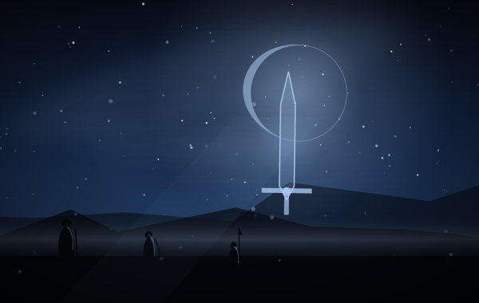
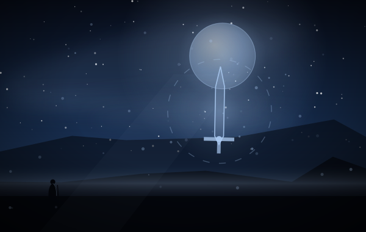
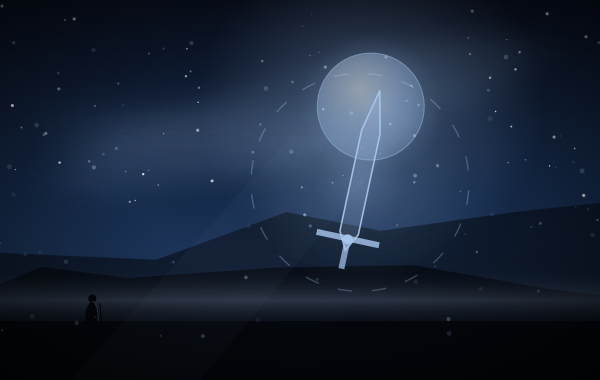
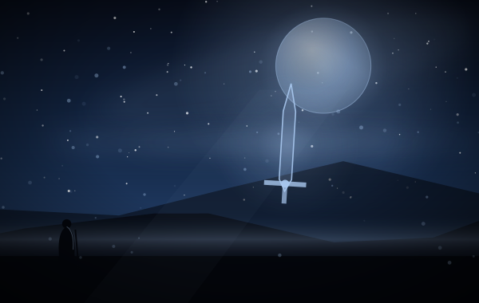
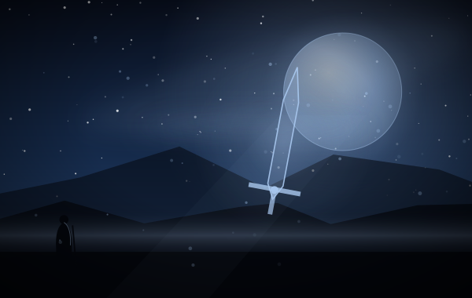

把「远方的憧憬」加入手牌
把「漫漫长路」加入手牌
「征途」会把这张牌直接塞进手牌
「征途」把这张牌塞进手牌
新的勇者 › 诺维安编组
以「路」为主线：移动作战、费用减免，以及把专属魔法反复拿回手里。十二张，是三张天赋与八张专属魔法加一张域外。
英雄：诺维安 走两次的路
类别：魔法 · 收藏上限 2
标签（归档者归纳，含规则词条）
这张卡面上没有出现规则词条：它的文本只用到通用规则，没有额外词条。
释义照录规则原文；标注「归档注」的是归档者补的说明。
2 费买两张「引擎」。它自己什么都不做，但等于用一张手牌位换两条检索线。设计上它是一张「构筑检查器」：如果卡组不需要这两张牌，它就是一张 2 费的空气；如果需要，它就是整套牌里最划算的一手。
——归档者，读这张卡的时候



